04E-commerce · Checkout & B2B backofficeE-commerce · Checkout y backoffice B2B · 2020/22
Frávega: Credits & Seller CenterFrávega: Créditos y Seller Center
Financing checkout for Frávega's marketplace and Seller Center, the backoffice where sellers manage their catalog, invoicing and team.
Checkout con financiación para el marketplace de Frávega y Seller Center, el backoffice donde los sellers gestionan su catálogo, facturación y equipo.

Overview
Resumen
As part of a 6-person design squad (UX writers, UX researchers and UI/UX designers) at Frávega, I worked on Frávega Credits, the financing flow inside the marketplace checkout, and on Seller Center, the backoffice where sellers manage their catalog, invoicing and team. I also contributed to the company's Design System, now adopted across all Frávega products.
Como parte de un squad de diseño de 6 personas (UX writers, UX researchers y UI/UX designers) en Frávega, trabajé en Créditos Frávega, el flujo de financiación dentro del checkout del marketplace, y en Seller Center, el backoffice donde los sellers gestionan su catálogo, facturación y equipo. También contribuí al Design System de la compañía, hoy adoptado en todos los productos de Frávega.
Credits: checkout with financing
Créditos: checkout con financiación
A 7-step financing flow: ID, identity verification, financing options, face verification, personal details, terms and confirmation, with clear progress at all times. Each completed step stays summarized and can be edited on its own, so one wrong field never forces users to start over.
Un flujo de financiación de 7 pasos: DNI, verificación de identidad, opciones de financiación, verificación facial, datos personales, términos y confirmación, con el progreso siempre visible. Cada paso completado queda resumido y se puede editar por separado, así un dato mal cargado no obliga a empezar de cero.
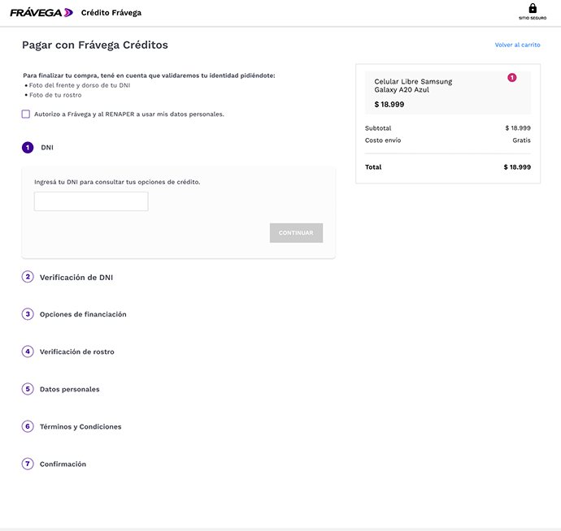
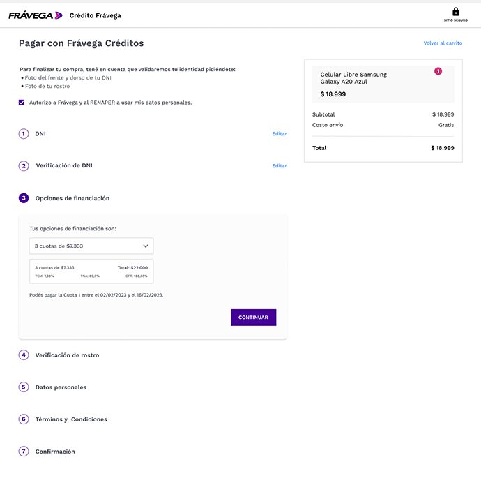
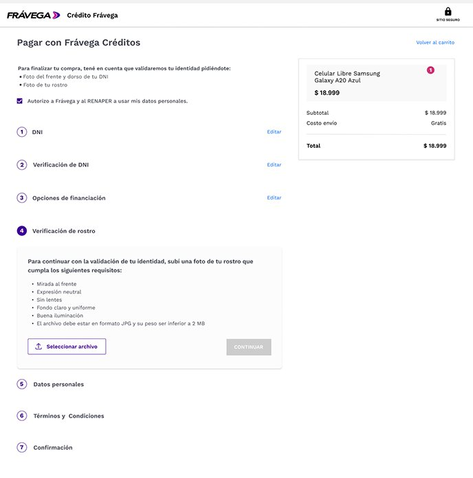
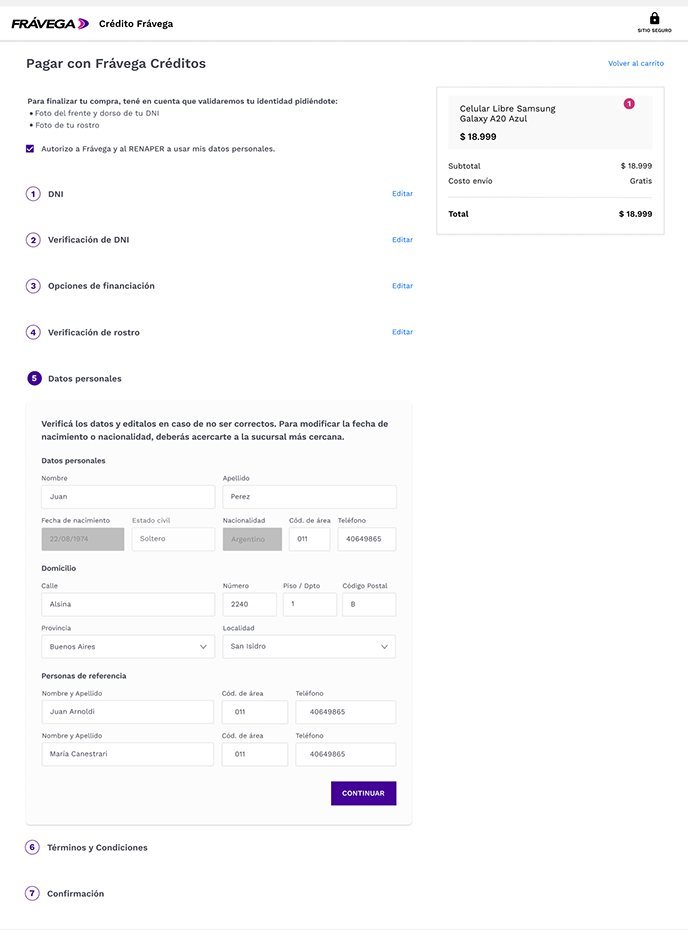
Seller Center: backoffice
Seller Center: backoffice
Tools for third-party sellers to manage catalogs of 1,000+ SKUs, invoices, account statements and their team.
Herramientas para que los sellers gestionen catálogos de más de 1.000 SKUs, facturas, estados de cuenta y su equipo.
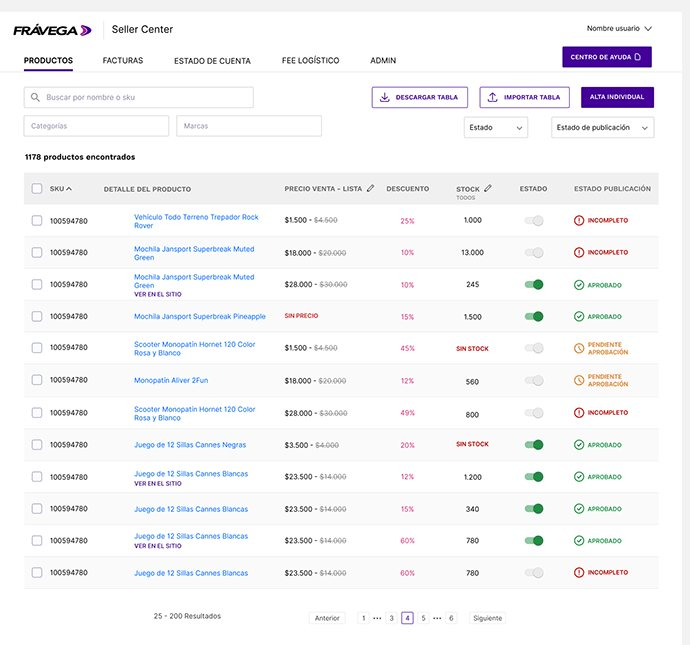
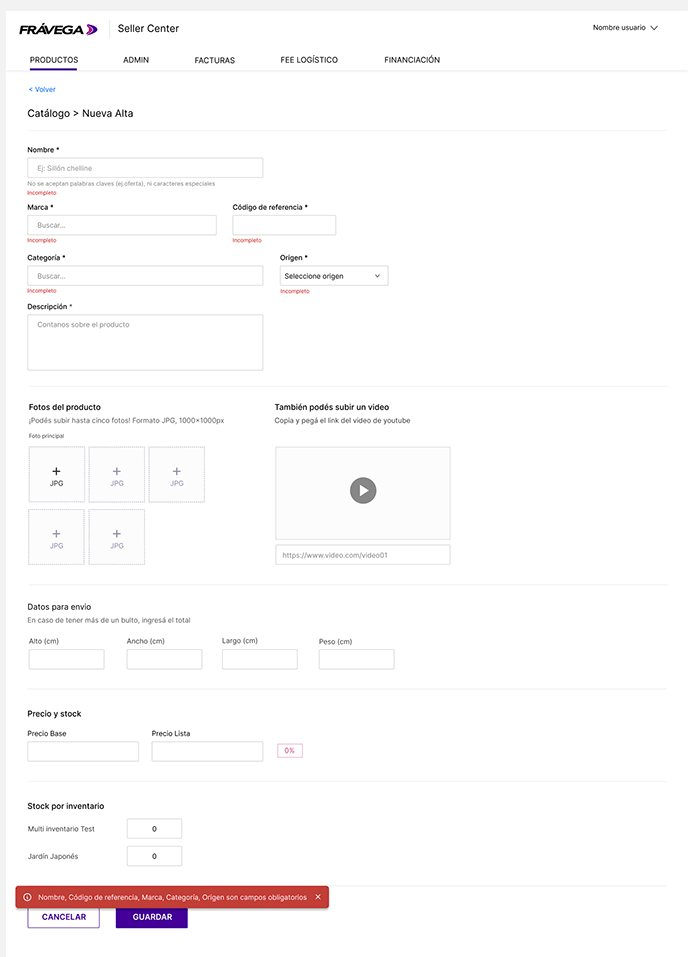
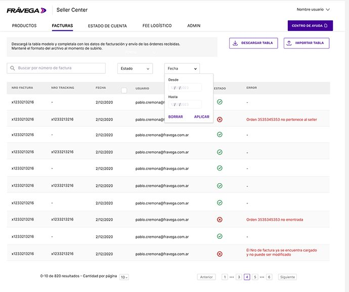
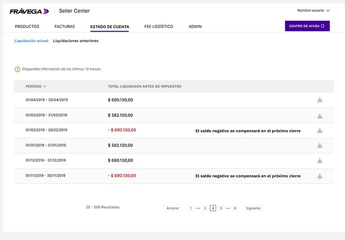
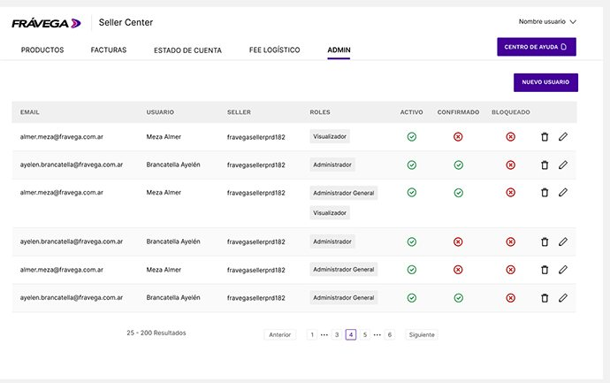
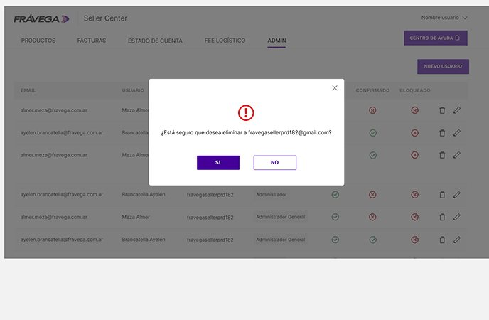
Commissions
Comisiones
An internal tool for the settlement team to manage base, special and default commissions per seller, plus bulk updates from a spreadsheet template.
Una herramienta interna para el equipo de liquidaciones: comisiones base, especiales y por defecto para cada seller, más actualización masiva desde una plantilla.
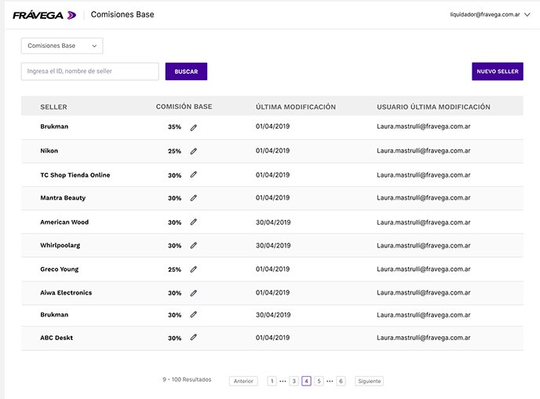
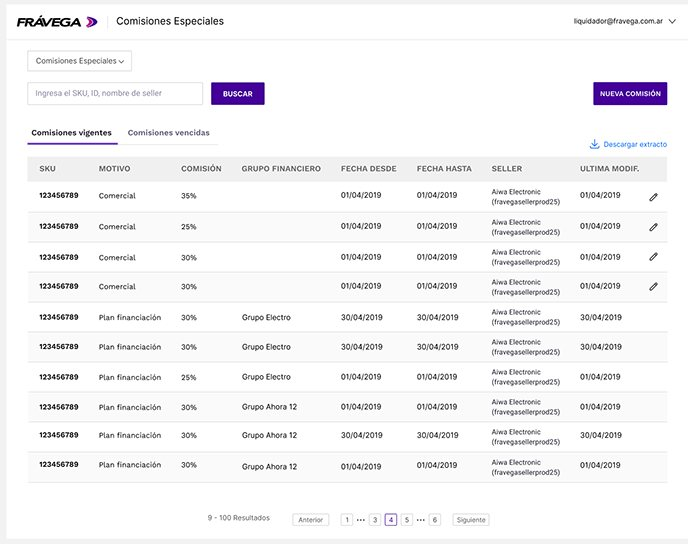
Research & outcome
Research y resultado
Moderated usability tests with at least 5 users per round, user interviews and Maze surveys, plus SQL, analytics and heatmaps to find friction points and measure feature impact, within the squad's Discovery and Design Thinking process. The components designed for Credits and Seller Center fed Frávega's Design System, now used across all the company's products, from backoffice tools to customer-facing platforms.
Tests de usabilidad moderados con un mínimo de 5 usuarios por ronda, entrevistas y encuestas en Maze, más SQL, analytics y mapas de calor para detectar fricciones y medir el impacto de cada funcionalidad, dentro del proceso de Discovery y Design Thinking del squad. Los componentes diseñados para Créditos y Seller Center alimentaron el Design System de Frávega, hoy usado en todos los productos de la compañía, del backoffice a las plataformas para clientes.